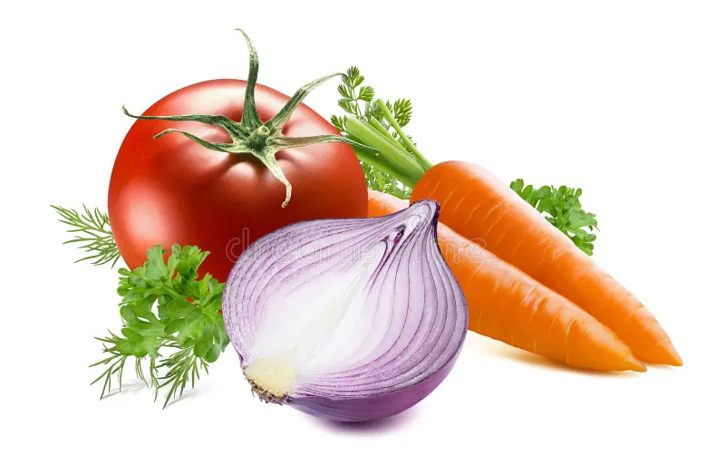
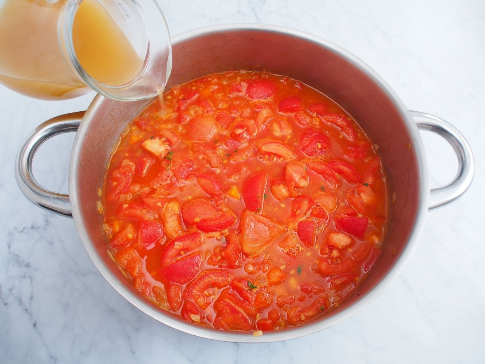

Comienza por lavar bien los tomates y pelar la cebolla, zanahoria. Corta los tomates en cuartos, pica la cebolla y corta la zanahoria en rodajas.
Añade los tomates cortados en trozos y el caldo a la cazuela. Cocina durante 20 minutos a fuego medio.
Tritura la mezcla hasta obtener una sopa suave. Añade sal y pimienta al gusto y sirve en un bol. Decora con un poco de perejil fresco.